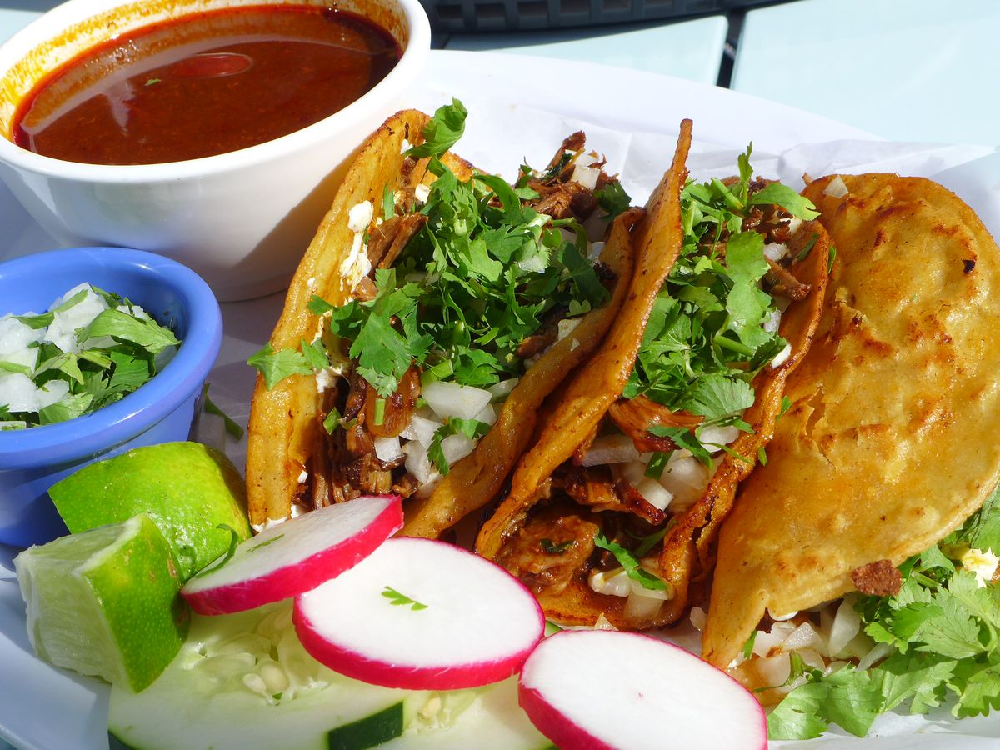

Birria Tacos

Birria Tacos are really good in Woodside,NY.
Ingredients
- Dried Guajillo Chile Peppers
- Dried Ancho Chiles
- Dried Chile de Arbol Peppers
- Beef Chuck Roast
- Salt and Freshly Ground Black Pepper to Taste
- Olive Oil
- Roma tomatoes
- White Vinegar
- Garlic Cloves
- Ground Black Pepper
- Whole Cloves
- Ground Cinnamon
- Ground Cumin
- Ground Thyme
- Dried Marjoram
- Dried Oregano
- Corn Tortillas
- Large White Onion
- Fresh Cilantro
Steps
- Fill a pot with water and bring to a boil. Add guajillo, ancho, and arbol chile peppers; boil for 5 minutes. Remove pot from heat and allow peppers to soak until cool. Drain, reserving 1/4 cup of the water.
- Preheat the oven to 325 degrees F (165 degrees C).
- Rinse meat and pat dry with paper towels. Season with salt and pepper.
- Heat oil in a Dutch oven over medium-high heat. Add meat and cook until browned on all sides, about 10 minutes. Remove from heat.
- Line a heavy cast-iron grill pan or griddle with aluminum foil and place over high heat. Arrange tomatoes in a single layer on top. Grill until tomato skin is burned on all sides and begins to peel, 3 to 5 minutes.
- Combine soaked chile peppers, cooked tomatoes, vinegar, garlic, 2 teaspoons black pepper, cloves, cinnamon, cumin, thyme, marjoram, oregano, and salt to taste in a blender. Pour in reserved 1/4 cup of chile water; blend until smooth.
- Strain chile sauce through a mesh strainer and pour over the browned meat in the Dutch oven, turning roast so it is completely covered with sauce. Cover the Dutch oven and place in the preheated oven.
- Bake, basting meat every 45 minutes with the sauce, until birria begins to fall apart, 3 to 4 hours. Remove lid and bake uncovered until birria is crispy on top, about 20 minutes. Remove from oven, cover with 2 layers of aluminum foil, and allow to rest in a warm area for 10 minutes.
- Meanwhile, warm tortillas on a griddle. Fill each tortilla with birria and top with chopped onion and cilantro.
Birria Tacos